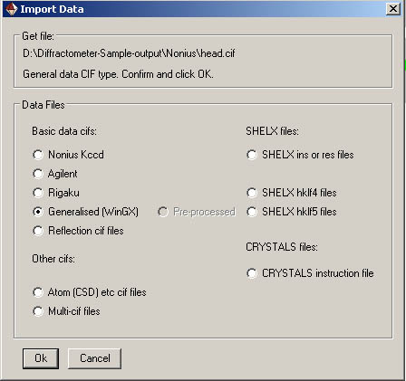

|  |
| SHELX .ins or .res files Remember that CRYSTALS identifies atoms by a symbol which represents the element type and a number, e.g.. C(23) Where possible, a SHELX atom identifier is converted to a direct CRYSTALS equivalent e.g. C23 becomes C(23). If SHELX identifiers contain letters after the number e.g. H12b, the numeric part is increased by 100 or 1000, e.g. H12b becomes H112. |
|
Converting SHELX hklf5 files to CRYSTALS format
CRYSTALS need to know the twin law matrix before inputting twinned data. If the data comes from a SHELX hklf5 file, CRYSTALS tries to determine the twin law from the indices of groups of overlapping reflections Unmerged data must be passed to CRYSTALS because if the data has been merged outside of CRYSTALS, some of the contributors may have had their index changed to that of an equivalent. The extraction of the twin law will then fail. |
|
| Auto-export creates a text
file containing the atomic coordinates whenever CRYSTALS is
closed down. Filter Reflections controls which reflections will be used in calculations. Edit Goodies opens a menu to enable you to input or change such things as colour, instrument type etc etc. |
| These old scripts use old versions of data conversion programs and are being retained until the new programs have stabilised. |
|